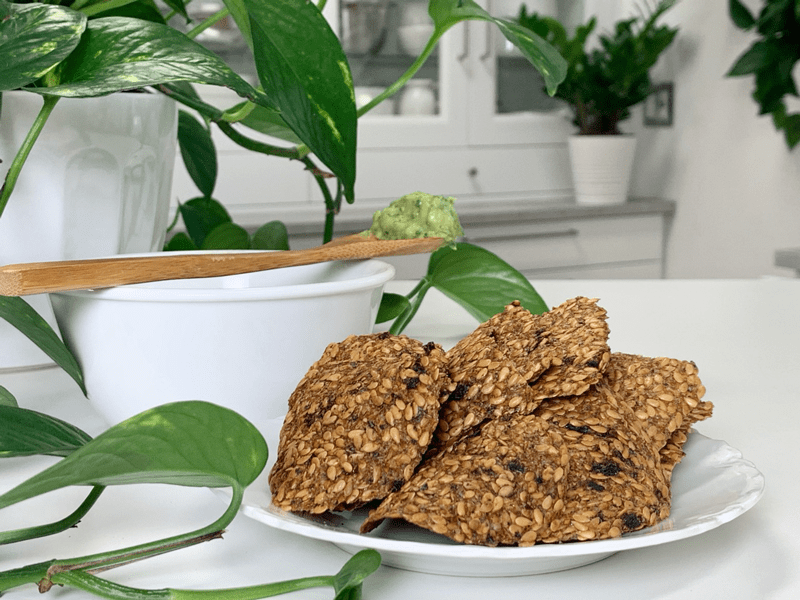
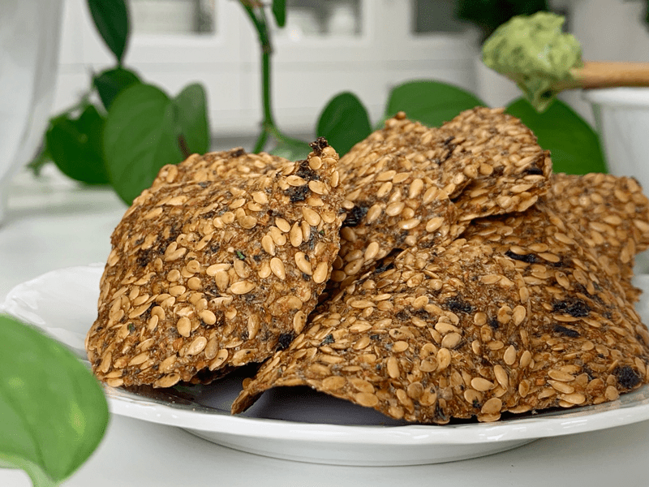
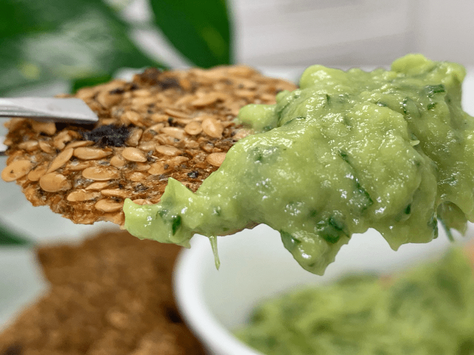
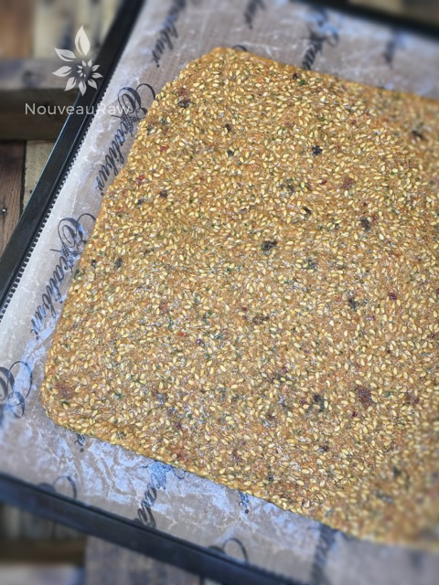
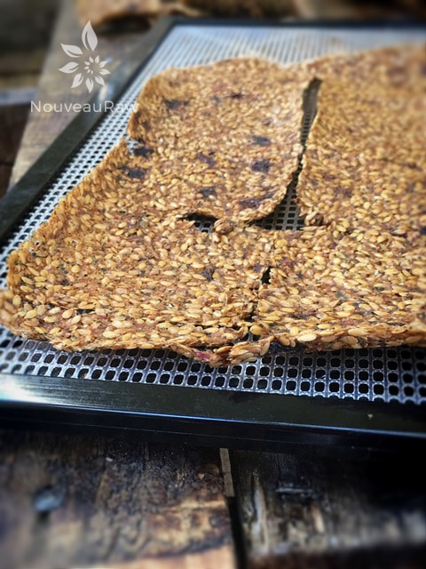
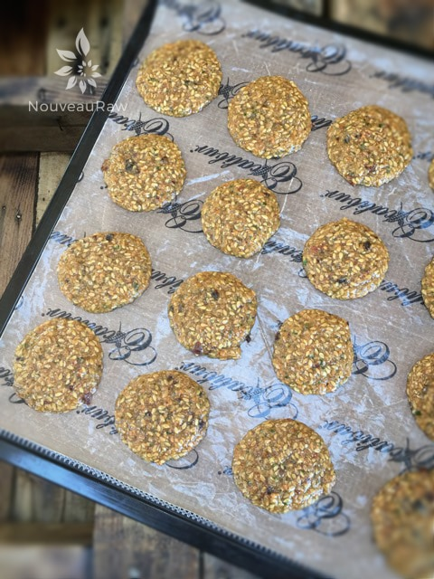
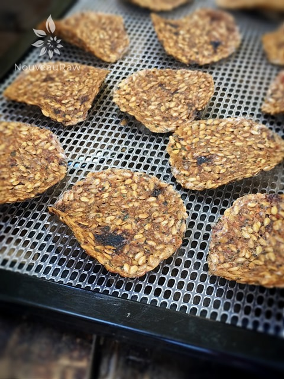
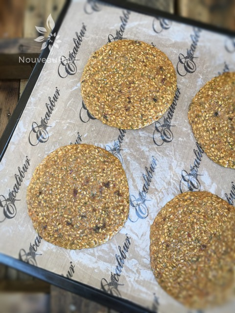
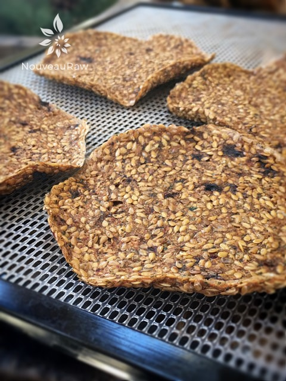

Garden Flax Crackers – 3 ways
- raw, vegan, gluten-free, nut-free, grain-free –
Flax crackers are a staple in our household. I always try to keep a large jar on the counter for my sweetheart. I bet I hear that lid come off (it makes a “ching” sound each time) a good 10-15 times a day. No complaints from me. I love the fact that he enjoys them and they are full of good nutrients for him.

Here’s the scoop, I have a choice, I can either chase him around like a nurse, trying to get him to take his supplements…. or I can prepare nutrient-dense foods for him. Though chasing him is fun and I might do that anyway, it is so comforting knowing that the foods we eat help to bring health to our bodies.

This recipe makes a large amount, which is a good thing if you have a family that likes to snack. Below, I have shared a few pictures of different things that you can do with this recipe. First of all, you can create crackers the lazy man’s way…. pour the batter on the dehydrator tray, spread it out, and dry it. Nothing wrong with this method at all! Once dried, you can just break it into pieces for a rustic appearance. Trust me, right now… that is so sheek. :)

Here I am demonstrating just how firm these crackers are… they can handle scooping up a hefty dollop of guacamole!
Another way to create formed crackers is by scooping the batter out with a cookie scoop and dropping them on the tray. This will create circular crackers that are even in size. One last thing that you can do is to divide up the batter, make crackers with part, and with the remaining portion, create extra-large crackers that double as a crust. Again, see the photos below. I hope you enjoy this recipe. Many blessings, amie sue
 Ingredients:
Ingredients:
yields 104 (1 Tbsp each) crackers
- 2 cups flax seeds
- 4 cups water
- 2 cups chopped carrots
- 2 cups chopped red pepper or zucchini
- 1 cup chopped onion
- 1/2 cup fresh, packed cilantro
- 1/2 cup sun-dried tomatoes, rehydrated in 1/2 cup water
- 1-2 garlic cloves
- 2 tsp fresh lemon juice
- 1 tsp Himalayan pink salt
- 2 tsp Italian seasoning
Preparation:
- Start soaking the flax seeds while you put the rest of the ingredients together.
- Be sure to use a large enough bowl to allow room for the seeds to expand. The flax will create a gel, do not wash or attempt to wash this off. This the normal process.
- In the food processor, fitted with the “S” blade, combine the; carrots, peppers or zucchini, onion, cilantro, sun-dried tomatoes and soak water, garlic, lemon juice, salt, and Italian seasoning.
- Add the soaked flax seeds and process until well mixed.
- You will either leave this slightly chunky or blend until nice and smooth. It depends on how you like your crackers.
- Spread 2 cups worth of mixture on the non-stick sheets that come with your dehydrator.
- Spread the mixture with an offset spatula or rubber spatula till it is about 1/4″ thick. Square of the edges.
- Or you can create circular crackers by dropping a tablespoons worth onto the non-stick sheet. Be sure to leave a little space in between them because they will spread a little.
- Sprinkle coarse sea salt on top.
- Dehydrate at 145 degrees (F) for 1 hour, then reduce to 115 degrees for roughly 4 hours, if dry enough flip the crackers over onto the mesh screen and peel the non-stick sheet off.
- Continue to dehydrate for another 4 hours or until crispy.
- Break into cracker size pieces if you did the full sheet and store in a glass airtight container.
- These will keep for up to a month, providing you have taken all the moisture of our them. If you like your crackers a tad chewier, you will need to eat them a bit faster so bacteria doesn’t grow in them.
Culinary Explanations:
- Why do I start the dehydrator at 145 degrees (F)? Click (here) to learn the reason behind this.
- When working with fresh ingredients it is important to taste test as you build a recipe. Learn why (here).
- Don’t own a dehydrator? Learn how to use your oven (here). I do however truly believe that it is a worthwhile investment. Click (here) to learn what I use.

Let’s start with the simplest way to make crackers. One big sheet! Spread thin and dehydrator. Flax crackers can be a challenge to score into shapes. If you miss the opportunity to do so… just break into pieces and serve them “rustic” style. Which are the in-thing these days.

Above is what it looks like after it is dehydrated. They like to curl a little.

Often times, I favor this technique because you don’t have to worry about scoring the crackers as they are preshaped for you. Below you will see what they look like dried.


It is also fun to make larger than normal crackers which can double as pizza crusts. They will take a bit longer to dry due to their increased thickness. Below, is how they appear dried. I like that they curl a little, helps to assure your toppings won’t slip off. Yea, yea, that’s the ticket. hehe

© AmieSue.com